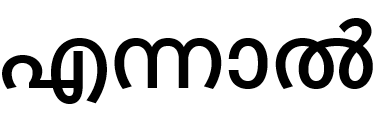
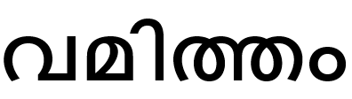

<!doctype html>
<html>

  <head>
    <meta charset = 'utf-8'>
    <title>Malayalam Lexical Decision Task</title>

    <script src="https://ajax.googleapis.com/ajax/libs/jquery/1.11.3/jquery.min.js"></script>
    <script src="jspsych-5.0.3/jspsych.js"></script>
    <script src="jspsych-5.0.3/plugins/jspsych-instructions.js"></script>
    <script src="jspsych-5.0.3/plugins/jspsych-single-stim.js"></script>
    <script src="jspsych-5.0.3/plugins/jspsych-text.js"></script>
    <script src="jspsych-5.0.3/plugins/jspsych-survey-text.js"></script>

    <link href="jspsych-5.0.3/css/jspsych.css" rel="stylesheet"></link>

    <style>
      p {class: "center-content";},
      .stimulus { font-size: 60px; }
    </style>
  </head>

  <body>
    <div id="jspsych-target"></div>
  </body>

  <script>
  /* experiment parameters */
  var max_response_time = 2500;
  var post_trial_gap = 1600;

  var practise_words = ['എന്നാല്‍', 'ചെയ്യുന്നത്', 'ജില്ലയിലെ', 'വേനൽക്കാലത്തും', 'കാണാത്തതിനാല്‍']
  var practise_non_words = ['പരതശവീലം', 'കിച്ചകരം', 'മസന്ധജാകം', 'തുവിപ്പിൽ', 'പ്രാഗ്യങ്ങതകൾ']

  var high_frequency_words = [' ആദ്യമായി ' , ' ഇന്ത്യന്‍ ' , ' തിരുവനന്തപുരം ' , 'തുടർന്ന്' , ' കിലോമീറ്റര്‍ ' , ' കോഴിക്കോട് ' , ' ആയിരുന്നു ' , ' ചെയ്യുന്നു ' , ' അമേരിക്കന്‍ ' , ' തുടർന്ന് ' , ' ആദ്യത്തെ ' , ' പ്രത്യേക ' , ' തുടങ്ങിയ ' , ' കേരളത്തില്‍ ' , ' ചെയ്യുന്ന ']

  var low_frequency_words = ['വാഴയിലയില്‍ ' , ' അവസരങ്ങളിലും ' , ' ഭജനമിരിക്കല്‍ ' , ' സമൂഹത്തിനു ' , ' റിലീസായി ' , ' ഇതുംകൂടി ' , ' പിടിക്കാനും ' , ' മുസ്ലീങ്ങൾക്ക് ' , ' ഹരിദാസിന്റെ ' , ' റെവല്യൂഷണ്‍ ' , ' ചൊല്ലുതന്നെ ' , ' ഗിയോവന്നി ' , ' കുടിക്കുന്നതും ' , ' എനിക്കറിയാം ' , ' യോജിക്കുന്ന '] //

  var nonwords = ['കൊളുമടം', 'ജയമദരിൽ', 'ഭൊക്കൂർ', 'വരദത്തിനേക്കി', 'പക്ഷഖടനം', 'പൂട്ടക്തിലും', 'സ്വീധങ്ങളിൽ', 'ലക്കടാനത്തത്', 'ബ്രീയല്ലം', 'ജോചികേണ്ട', 'തഞ്ചുഡഗം', 'ഗജിതമായില്ല', 'തണ്ടൂരായപ്പോൾ', 'സിപ്ലിത്തരം', 'ചൈകതിന്റെ', 'ധമ്പിപവകയുടെ', 'ജഢണതുട', 'കമ്മുണ്ണിതം', 'യോതന്തര്യം', 'ഗരൂഢനങ്കിലും', 'സമീപച്ചാരകം', 'തെന്നക്ഷിലും' ,'ഗരൂരസംവിദം', 'അങ്കകനകൾ', 'മഘത്രശാലകൽ', 'ഇഗ്രതളം', 'പ്രാജതിന്', 'സ്പൂഭമായ', 'വിമടത്തി', 'ബല്ലിദ്രൂവം']

  // generate a random subject ID
  var subject_id = Math.floor(Math.random()*100000);


  // this adds a property called 'subject' and a property called 'condition' to every trial

  jsPsych.data.addProperties({
    subject: subject_id,
  });

  /* create experiment timeline array */
  var timeline = [];
  /* define welcome message block */
  var welcome_block = {
    type: "text",
    text: ["<p class='center-content'><u> <strong>Malayalam Experiment</strong></u></p>" +
    "<div class='center-content'></img>" +
    "<p class='small'><strong>Press any key to begin</strong></p></div>"
    ],
    timing_post_trial: 1000,
  };
  timeline.push(welcome_block);


  /* instructions */
  var instructions = {
    type: 'instructions',
    pages: ['<p style="font-weight:bold;"> Informed consent </p>' + '<p> I hereby acknowledge that I agree to participate in an empirical study on language processing. I have been informed about the planned study, and that I have understood the content of this information, have no issues with recording of data during the planned experiment; I also have no issues with this data being used anonymously for future research purposes. My participation in this study is voluntary. I know that I can at any time cancel my participation from the study without any difficulty. I am aware that I can withdraw this consent at any time.</p>' + '<p> If you wish to participate, you must CLICK next button in order to agree to participate in this study. </p>'
    ],
    allow_keys: false,
    show_clickable_nav: true

  }
  timeline.push(instructions);

  var survey_trial = {
  type: 'survey-text',
  preamble: 'Please fill the following form',
  questions: [
    "Age",
    "Gender (M/F)",
    "Are you a native speaker- Yes or No",
    "Have you received schooling in Malayalam and if so upto what grade"
  ],
  };
  timeline.push(survey_trial);

  /* instructions before practise*/
  var instructions = {
    type: 'instructions',
    pages: ['<p> PLEASE READ THE INSTRUCTIONS CAREFULLY.</p>' +
        '<p>You are going to see a series of individual words, some of which are' +
      ' actual Malayalam words, while others are nonsense words that look like ' +
      'Malayalam words. Your job is to indicate whether the word is a real Malayalam ' +
      'word as quickly and accurately as you can.</p>' +
      '<p>In case of no response, you will see the next word automatically.</p> ' +
      '<p>Try not to say the word aloud as you read. </p>' +
      '<p class="center-content" style="font-weight:bold;">Press A if the word is a Malayalam word.</p>' +
      '<p class="center-content" style="font-weight:bold;">Press L if the word is a non-Malayalam word.</p>',
      '<p>For example:</p>' +
      "<div class='left center-content'></img>" +
      "<p class='small'><strong>Malayalam Word: Press the A key</strong></p></div>" +
      "<div class='right center-content'></img>" +
      "<p class='small'><strong>Non-Malayalam Word: Press the L key</strong></p></div>",
    "<p class='center-content'><u> <strong>Practise - Ready?</strong></u></p>" +
  "<p class='center-content'>A practise phase will begin now. You will not be able to take a break from your seat.</p></div>" +
  "<p class='center-content'>Place your hands on the 'a' and 'l' keys to make the response easier.</p></div>" +
  "<p class='center-content'><strong>If you are ready, click 'Next' to begin.</strong></p></div>"

    ],
    allow_backward: false,
    allow_keys: false,
    show_clickable_nav: true
  }
  timeline.push(instructions);

  /* Create Practise Trials */
  var practise_words_trials = [];
  for (var i in practise_words) {
    practise_words_trials.push({
      type: 'single-stim',
      stimulus: '<div style="display: flex; justify-content: center; align-items: center; height: 90vh;"><div style="font-size:64px;">' + practise_words[i] + '</div></div>',
      timing_response: max_response_time,
      timing_post_trial: post_trial_gap,
      choices: ['a', 'l'],
      is_html: true,
      data: {
        word_type: 'practise',
      }
    });
  }

  var practise_non_words_trials = [];
  for (var i in practise_non_words) {
    practise_non_words_trials.push({
      type: 'single-stim',
      stimulus: '<div style="display: flex; justify-content: center; align-items: center; height: 90vh;"><div style="font-size:64px;">' + practise_non_words[i] + '</div></div>',
      timing_response: max_response_time,
      timing_post_trial: post_trial_gap,
      choices: ['a', 'l'],
      is_html: true,
      data: {
        word_type: 'practise',
      }
    });
  }
  var fixation = {
    type: 'single-stim',
    stimulus: '<div style="display: flex; justify-content: center; align-items: center; height: 90vh;"><div style="font-size:40px;">+</div></div>',
    choices: 'none',
    timing_response: 1600,
    timing_post_trial: 0,
    trial_duration: 1600,
    is_html: true,
    data: {
      word_type: 'practise',
    }
  }

  var all_practise_trials = practise_words_trials.concat(practise_non_words_trials);
  all_practise_trials = jsPsych.randomization.shuffle(all_practise_trials);
  // Add fixation cross before each trial
  all_practise_trials_fixation = [].concat(...all_practise_trials.map(e => [fixation,e]))

  timeline = timeline.concat(all_practise_trials_fixation);


  /* instructions before experiment*/
  var instructions = {
    type: 'instructions',
    pages: [
    "<p class='center-content'><u> <strong>Ready?</strong></u></p>" +
  "<p class='center-content'>The real experiment will begin now. You will not be able to take a break from your seat.</p></div>" +
  "<p class='center-content'>Place your hands on the 'a' and 'l' keys to make the response easier.</p></div>" +
  "<p class='center-content'><strong>If you are ready, click 'Next' to begin</strong></p></div>"
    ],
    allow_backward: false,
    allow_keys: false,
    show_clickable_nav: true
  }
  timeline.push(instructions);


  /* create trials */
  var low_frequency_trials = [];
  for (var i in low_frequency_words) {
    low_frequency_trials.push({
      type: 'single-stim',
      stimulus: '<div style="display: flex; justify-content: center; align-items: center; height: 90vh;"><div style="font-size:64px;">' + low_frequency_words[i] + '</div></div>',
      timing_response: max_response_time,
      timing_post_trial: post_trial_gap,
      choices: ['a', 'l'],
      is_html: true,
      data: {
        word_type: 'low',
        word: low_frequency_words[i],
        correct_response: 'a',
      }
    });
  }
  var high_frequency_trials = [];
  for (var i in high_frequency_words) {
    high_frequency_trials.push({
      type: 'single-stim',
      stimulus: '<div style="display: flex; justify-content: center; align-items: center; height: 90vh;"><div style="font-size:64px;">' + high_frequency_words[i] + '</div></div>',
      timing_response: max_response_time,
      timing_post_trial: post_trial_gap,
      choices: ['a', 'l'],
      is_html: true,
      data: {
        word_type: 'high',
        word: high_frequency_words[i],
        correct_response: 'a',
      }
    });
  }
  var nonword_trials = [];
  for (var i in nonwords) {
    nonword_trials.push({
      type: 'single-stim',
      stimulus: '<div style="display: flex; justify-content: center; align-items: center; height: 90vh;"><div style="font-size:64px;">' + nonwords[i] + '</div></div>',
      timing_response: max_response_time,
      timing_post_trial: post_trial_gap,
      choices: ['a', 'l'],
      is_html: true,
      data: {
        word_type: 'nonword',
        word: nonwords[i],
        correct_response: 'l',
      }
    });
  }

  var all_trials = low_frequency_trials.concat(high_frequency_trials, nonword_trials);
  all_trials = jsPsych.randomization.shuffle(all_trials);
  // Add fixation cross before each trial
  all_trials_fixation = [].concat(...all_trials.map(e => [fixation,e]))

  timeline = timeline.concat(all_trials_fixation);
  /* show summary data */

  function compute_mean_RTs(data) {
    var response_times = {
      low: [],
      high: [],
      nonword: []
    }
    var correct_responses = 0;
    var total_responses = 0;
    var content = ''
    for (var i in data) {
      if ((data[i].trial_type === "single-stim") & (data[i].word_type !== "practise")) {
        content = content + data[i].word_type + "\t" + data[i].rt + "\n"
        total_responses++;
        var correct = false;
        if (data[i].word_type == 'nonword') {
          correct = (data[i].key_press == 76)
        } else {
          correct = (data[i].key_press == 65)
        }
        if (correct) {
          correct_responses++;
        }
        response_times[data[i].word_type].push(data[i].rt);
      }
    }


    response_times.low = mean(response_times.low);
    response_times.high = mean(response_times.high);
    response_times.nonword = mean(response_times.nonword);
    response_times.accuracy = Math.ceil(correct_responses / total_responses * 100);

    return response_times;
  }

  function mean(arr) {
    var sum = 0;
    for (i in arr) {
      sum += arr[i]
    }
    return sum / arr.length;
  }


  var show_data_trial = {
    type: 'text',
    choices: 'none',
    text: function() {
      // console.log("DATA: ", jsPsych.data.getData());

      var rt_data = compute_mean_RTs(jsPsych.data.getData());
      var message = "<p class='center-content'>Yay! Congratulations. You completed the experiment! </p>" +
       "<p class='center-content' style='font-weight:bold;'> You responded correctly on " + rt_data.accuracy + "% of the trials. </p>" +
        "<p class='center-content'>Your average response time for " + "high frequency Malayalam words was " + Math.floor(rt_data.high) + "ms.</p>" +
        "<p class='center-content'>Your average response time for low frequency Malayalam words was " + Math.floor(rt_data.low) + "ms.</p>" +
        "<p class='center-content'>Your average response time for non-Malayalam words " + " was " + Math.floor(rt_data.nonword) + "ms.</p><br>" +
        "<p class='center-content' style='font-weight:bold;'> Please press any KEY to exit the experiment. </p><br>"+
        "<div class='center-content'></img>";

      return message;
    }
  }
  timeline.push(show_data_trial);
  /* start the experiment */
  /* Changed for JATOS: wrapped jsPsych.init with jatos.onLoad */


  function postDataRequest() {

    dataP = {
      data: jsPsych.data.dataAsCSV(),
      subject: jsPsych.data.getData()[0]['subject']
    }
    const Url="/receive"
    $.ajax({
      url: Url,
      type: "POST",
      data: dataP,
      success: function(data) {
        console.log("posted");
      },
    })
  }

    jsPsych.init({
      display_element: $('#jspsych-target'),
      fullscreen: true,
      timeline: timeline,
      on_finish: function() {
        postDataRequest();
        // jsPsych.data.displayData();

      },
  });

  </script>

</html>
